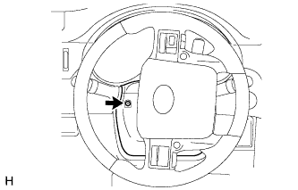
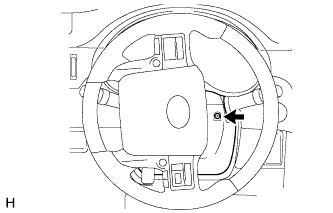
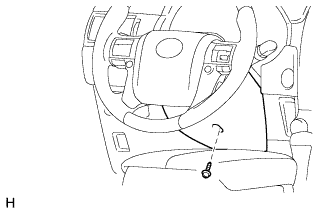
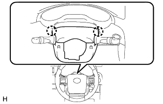
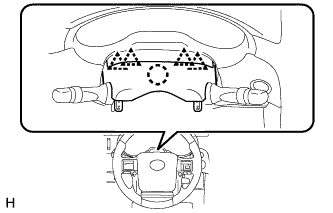

WIPER SWITCH > REMOVAL |
| 1. DISCONNECT CABLE FROM NEGATIVE BATTERY TERMINAL |
| Condition | Waiting Time |
| Vehicle enrolled in G-BOOK system | 6 minutes |
| Vehicle not enrolled in G-BOOK system | 1 minute |
| 2. REMOVE LOWER STEERING COLUMN COVER |
|  |
Turn the steering wheel to the left as necessary to remove the screw.
|  |
Turn the steering wheel to the right as necessary to remove the screw.
|  |
Remove the screw.
|  |
Detach the 2 claws and remove the lower steering column cover.
| 3. REMOVE UPPER STEERING COLUMN COVER |
|  |
Detach the 4 clips and claw and remove the upper steering column cover.
| 4. REMOVE WINDSHIELD WIPER SWITCH ASSEMBLY |
 |
Disconnect the connector.
Detach the claw and remove the windshield wiper switch assembly.